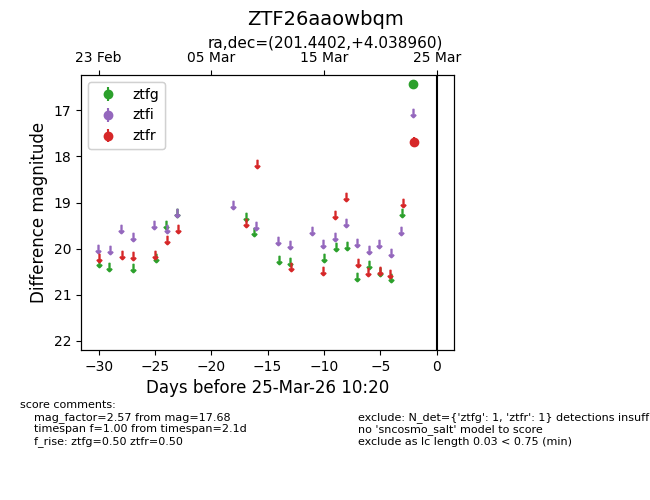
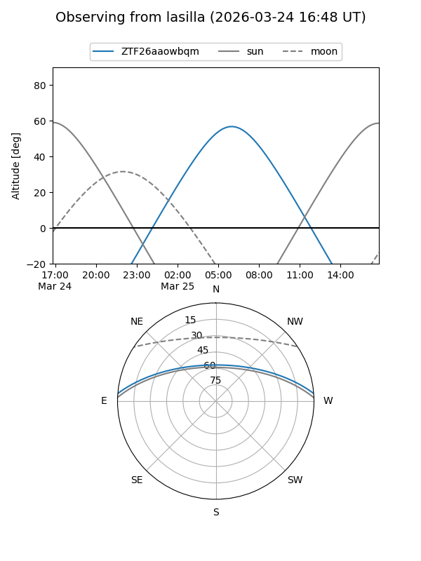
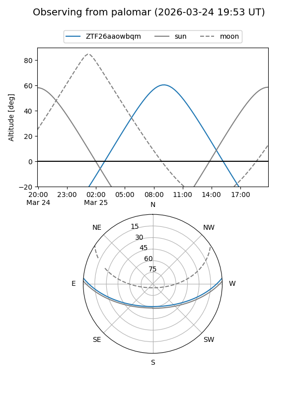

ZTF26aaowbqm
Target ZTF26aaowbqm at 2026-03-25 10:22
Aliases and brokers:
FINK: link
Lasair: link
ALeRCE: link
alt names
ZTF26aaowbqm (ztf,fink_ztf)
Coordinates:
equatorial (ra, dec) = 201.4402,+4.03896
equatorial (HMS+DMS) = 13:25:45.64,+04:02:20.26
galactic (l, b) = (323.9639,+65.49950)
Flags:
Photometry:
last ztfg=16.43, ztfr=17.68
1 ztfg, 1 ztfr detections
Lightcurve

Visibility


Additional plots